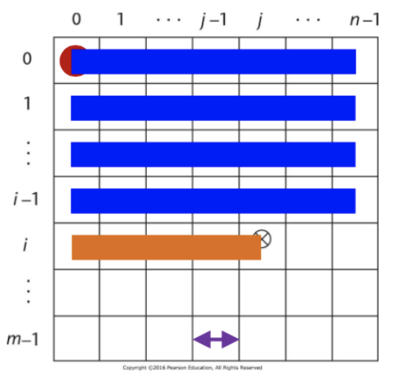
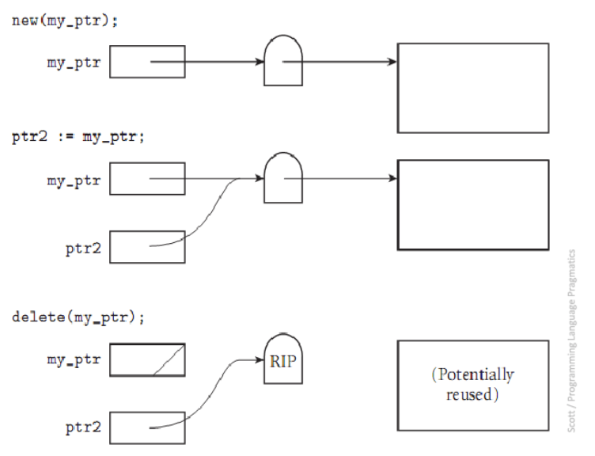
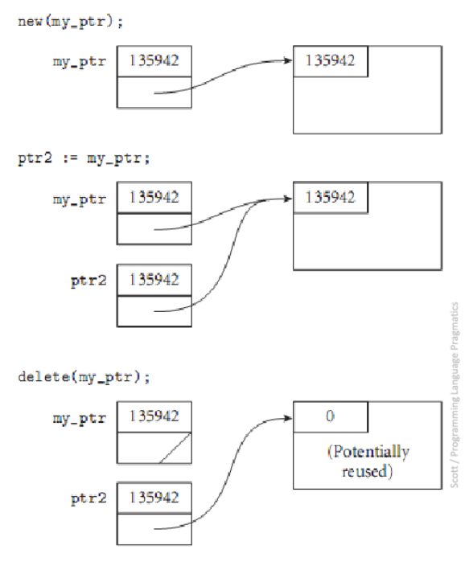

Data Types
- Defines a set of possible values (the domain) and the pre-defined operations
- Defines how to interpret bit strings of various lengths
Primitive
- Integer- almost always an exact reflection of hardware
- python has unlimited precision ints (other languages limit based on number of bits)
- Floats- model real numbers (but only as approximations)
- IEEE Floating Point Standard 754
- float- usually 32 bits
- double- double the precision so often 64 bits
- Complex- two floats (1 real, 1 complex)
- Decimal- attempts were made to store a fixed number of decimal digits in coded form (Binary Coded Decimal) where each digit is encoded separately but was overall a failure
- Pros: increased accuracy since each digit is represented by 4 bits
- Cons: limited range, wastes memory, not all CPUs have direct hardware support
- Used by business applications for representing money (e.g. C# has a double and decimal type which has more precision)
- Boolean- implemented as a byte due to byte-addressable memory (can't address single bits)
- Pros: readability in logic expressions (as opposed to interpreting numeric expressions)
- Character-
- ASCII is a 7-bit character set which is limited and inadequate in the modern age
- UNICODE
- initially fixed 16-bit representation
- includes the base multilingual plane for non-roman characters
- backwards compatible with ASCII
- still inadequate
- UTF-8
- variable length for bit representation
- most widely used
Strings
- Static Length
- compile time descriptor includes the length
- Descriptor- collection of attributes of a variable
- can be static- maintained by compiler (e.g. C++)
- or can be dynamic- managed at runtime (e.g. Python)
- Limited Dynamic Length
- run time descriptor includes the maximum length and the current length
- Dynamic Length
Ordinal Types
- Type in which the range of possible values can be easily mapped to the set of positive integers
- primitive ordinals in java: integer, char, boolean
Enumeration Types
- user-defined ordinal type
- all possible values, which are amed constants, are provided in the definition
- Pros:
- readability
- reliability- compiler can perform checks
Array Types
- Array- an aggregate of homogeneous data elements where individual elements are identified by position relative to the first
- indexing/subscripting an array is a mapping from indices to elements
- some languages like Ada, Fortran, and Matlab use () instead of []
- index range checking is done:
- by default: C#, Java, Go
- Not at all: C, C++, Fortran
- heterogeneous array- one in which elements need not be the same type
- JS, Perl, Python, Ruby
- heap-dynamic arrays
- oftentimes array elements only contain references to the data stored
Subscript Binding & Array Categories
Static
- Statically bound subscript ranges
- Static storage allocation
- Increased efficiency b/c no dynamic (de)allocation
- C, C++ arrays that include
static
Fixed Stack-Dynamic
- Statically bound subscript ranges
- Storage allocation done at declaration elaboration time
- Increased space efficiency b/c space can be reused during runtime
- C, C++ arrays without
static
Fixed Heap-Dynamic
- Static binding of subscript ranges
- Dynamic storage binding when requested at runtime
Heap-Dynamic
- Dynamic binding of subscript ranges
- Dynamic storage allocation
- Can change any number of times (more flexible)
Array Implementation
- access function for single-dim array:
address(a[k]) =
address(arr[lower_bound]) + ((k - lower_bound) * element_size)
- access function for multi-dim array:
address(a[i,j]) =
address(a[row_lb, col_lb])
+ (((i - row_lb) * n) + (j - col_lb)) * element_size

- the lower bounds are zero in 0-indexed languages and 1 in 1-indexed languages
- Storing Arrays in Memory:
- Row-Major order (used by most languages)
- Column-Major order (Fortran & Matlab)
- knowing which affects speed of code
- row major order means you should process by row to reduce cache misses since cache might store only 1 row at a time
- cache misses and even page swaps are expensive with large matrices
Associative Arrays
- Unordered collection of data elements indexed by keys
- maps arbitrary indices to values
- elements are (key, value) pairs
- often implemented as hash tables
Composite Types
- Aggregate of possibly different data elements in whih the individual elements are identified by names
- struct in c/c++ & go, named tuple in python
- from OOP pov, classes are a composite type
Union Type
-
type whose variables are allowed to store different type values at different times during execution
-
free union- when there is no language support for type checking in the union construct (e.g. C, C++) so it allows you to create unsafe code
- reason why C,C++ are not strongly typed
-
discriminant- type indicator required to be included in a union in certain languages like ML, Haskell, F#
-
Java and C# don't support unions due to safety concerns
Pointer Types
-
Variable that takes on values of memory addresses or a special value
null- Indirect addressing- using a pointer to step through an array
- Dynamic memory- can access memory locaitions on the heap
-
2 operations:
- Assignment- set a pointer variable's value to a memory address
- Dereferencing- get the value stored at the memory address represented by pointer's value
- Can be done explicitly or implicitly
-
Dangers:
- Dangling Pointers- pointer points to heap-dynamic variable that has been deallocated
- Memory Leak- allocated heap-dynamic variable that is no longer acessible to the user program
- Buffer Overflows- no bounds checking on pointers when using with arrays
-
Necessary for dynamic data structures
Reference Types
- C++ has special kind of pointer type that is used primarily for formal parameters
- has the advantages of both pass-by-pointer and pass-by-value
- Java uses only references and replaces pointers entirely
- C# uses references but also allows pointers in
unsafemethods
Solutions for Dangling Pointers
- Tombstones
- An extra heap cell is allocated as a pointer to the actual heap-dynamic variable
- Any pointers pointing to the heap-dynamic variable actually point at its tombstone
- If any pointer deallocates the variable, the tombstone is set to null so other pointers now point to null instead of a re-allocated memory address (safer but can still get nullptr dereferencing errors)
- Costly in time and space
- Similar idea to smart pointers

- Locks-and-Keys
- Pointer values are represented as (key, address) pairs
- Heap-dynamic variables are represented as variable plus a cell for an integer lock value
- When a variable is allocated, the lock value is created and plaed in the lock cell and the key of the pointer
- Each dereference must compare the key and the lock

- No explicit deallocation permited by the language (e.g. Rust & Java)
Heap Management/Garbage Collection
- Complex runtime process
- Two approaches:
- Eager- reclamation is gradual/continual (e.g. referenece counters)
- Lazy- reclamation occurs when the list of variable space becomes empty or low (e.g. mark-sweeep & stop-n-copy)
- Java uses combination of both techniques
Reference Counter
- Maintain a counter in every cell which stores the number of pointers currently pointing at the cell
- Reclaim cells when their count drops to zero
- Pros:
- Incremental, so no significant delays in app's execution
- Cons:
- Space Required
- Execution time required
- Complications for cells connected in a cycle
Mark-and-Sweep
- Recursively follow all "live" pointers, marking all discovered structures as useful
- Sweep over the entire heap and reclaim any structures not marked as useful (turn off markers in prep for next time)
- Pros:
- Cons:
- space required
- execution time required
Stop-and-Copy
- Splits heap memory in half
- All new allocations go into the active half
- At collection time, recursively follow all live pointers and copy all discovered structures to the other half, which becomes the active half
- The inactive half now only contains garbge and is reclaimed all at once
Generational Copiers
- Exploit fact that many objects have short lives while others have long lives
- Keep track of lifetimes (how many collection passes they have survived) and collect long lifetime objects less frequently
Escape Analysis
- Determines if any references to a value escape the function where the value i declared
- If no references escape, the value can be stored on the stack
- Values stored on the stack don't need to be allocated/freed
- Java and Go do this
// car object would be stored on the stack
public String getCarDesc(){
Car car = new Car();
String desc = car.genDesc();
return desc;
}
Type Checking
- ensure operands of an operator are of compatible types
- include subprogram parameters and assignment statements
- If type bindings are static, type checking can be static (i.e. at compile time)
- If type bindings are dynamic, type checking must be dynamic
- Compatible Type- type that is legal for the operator or can be coerced (implicitly converted) by compiler generated code to a legal type
- Strongly Typed Languages- type errors are always detected at compile time or run time
- No: C, C++
- Almost: Java, C# (allow explicit type conversion which can fail at runtime but pass compiler)
- Yes: F#, ML, Rust